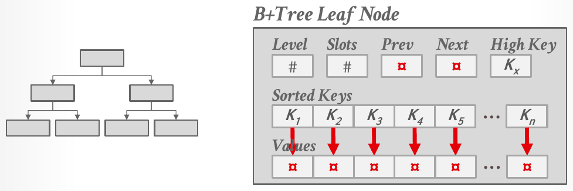
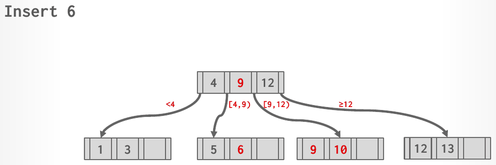

Database Internals in Go · Unit 3 · Lesson 3
B+Trees: Structure, Search, and Insert
Describe a B+tree's nodes and invariants, search it with the "< goes left, ≥ goes right" rule, and trace inserts that split a leaf (copy up) and an inner node (push up), including HW3's Q3(a) and Q3(b).
The last lesson ended on a limit: a hash table can't do range scans or look up a partial key, so it is usually the wrong choice for a table index. Lecture #08 introduces the structure that almost every DBMS with order-preserving indexes uses instead, the B+tree. Project 2 asks you to build one, so this lesson and the next also point out where BusTub's B+tree differs from the lecture's.
Lesson 1: in a linear-probe table, a lookup and an insert each reach a slot holding a tombstone. What does each one do?
Unit 1, Lesson 3: in Lecture #05's index-organized storage, where do a table's tuples live?
Unit 2, Lesson 7: a goroutine in the buffer pool may hold a frame latch and need the pool latch, for example when a B+tree holds a parent page while it fetches a child. Which rule keeps such goroutines from deadlocking?
Indexes and the B-tree family
The notes define an index as a replica of a subset of a table's attributes, organized or sorted for efficient access to the location of specific tuples. Instead of scanning the table, the DBMS looks the tuples up in the index, and it keeps the table and its indexes logically in sync. More indexes make lookups faster, but each one uses storage and must be maintained on every change, so there is a trade-off in how many to create.
"B-tree" names both one data structure and a family of balanced trees. Slide 13 lists the family: the B-Tree, the B+Tree (1973), the B*Tree, the Blink-Tree (1981), the Bε-Tree (2003) and the Bw-Tree (2013). The original B-Tree, from the early 1970s, stored keys and values in every node, which saves space because each key appears once. A B+tree stores values only in its leaves; its inner nodes only guide the search. The notes add that modern B+trees borrow features from the other variants, such as the Blink-Tree's sibling pointers.
What makes a tree a B+tree
Slide 14 defines a B+tree as a self-balancing, ordered m-way tree that supports searches, sequential access, insertions and deletions in O(logm n), where m is the tree's fanout: the maximum number of children a node can have. Its properties:
- It is perfectly balanced: every leaf is at the same depth.
- Every node other than the root is at least half full: m/2 − 1 ≤ #keys ≤ m − 1.
- Every inner node with k keys has k + 1 non-null children.
- It is optimized for reading and writing large blocks of data. The notes say it turns what would be random I/O into sequential I/O.
The slide adds that real implementations relax some of these rules. HW3 calls the fanout the order d: an order-4 tree has at most 4 pointers, and so at most 3 keys, per node.
![A B+tree. The root node holds 20, with its layout shown above as node pointer, key, node pointer, and so on. Arrows labelled less than 20 and at least 20 lead to inner nodes holding 10 and 35, which are joined by sibling pointers. Below them, four leaf nodes hold 6; 10; 20 and 31; and 38 and 44, with arrows labelled less than 10, at least 10, less than 35 and at least 35. The leaves are linked to each other by sibling pointers in both directions. The leaf layout is shown below as node pointer, key, value, and so on, ending with a node pointer. A large arrow reads Index Key(s) Low to High.](../assets/slides/L08-bplustree-structure-p56.png)
Inner nodes and leaves
Every node is an array of key/value pairs, kept (almost always) in sorted key order. The keys come from the attributes the index is built on. The values depend on the node:
- An inner node stores child pointers as its values. Its keys are separator keys, which the notes call guide posts: they steer the search but don't have to match any key in a leaf. A key can stay in an inner node after it has been deleted from every leaf.
- A leaf node stores the index's entries. Leaves are linked by sibling pointers to the previous and next leaf, so a range scan can walk along the leaves without going back up the tree.
NULL keys go all in the first leaf or all in the last one, depending on whether the index is declared NULLS FIRST or NULLS LAST.

Slide 18 gives two choices for what a leaf's value is:
- A record ID, the location of the tuple, as in Unit 1. The slide calls this the most common implementation, and lists PostgreSQL, SQL Server, DB2 and Oracle.
- The tuple data itself. This is index-organized storage from Unit 1, Lesson 3: the primary key index's leaves hold the tuples, and secondary indexes store the tuple's primary key as their value. The slide lists SQLite, SQL Server, MySQL and Oracle.
#08 B+Trees, "Introduction to B+ trees" (17:02), slides 12–19: the B-tree family, the definition, node and leaf layouts, leaf values, and the B-tree versus the B+tree.
Searching
A search starts at the root. In each inner node it finds the child whose range holds the key: the pointer to the left of separator K covers keys less than K, the pointer to the right covers keys greater than or equal to K. It repeats that until it reaches a leaf, then looks for the key there. Each level costs one page read, and with a large fanout the tree stays shallow, which is where O(logm n) comes from. A range scan finds the leaf where the range starts and then follows sibling pointers to the right.
In the figure above, Find 31 goes right at the root (31 ≥ 20), left at the inner node 35 (31 < 35), and finds 31 in the leaf [20, 31]. Find 15 goes left at the root and right at the inner node 10, reaches the leaf [10], and stops there: 15 isn't in the tree.
Inserting
Slide 20 gives the insert algorithm:
- Find the correct leaf L.
- Insert the entry into L in sorted order. If L has room, you're done.
- Otherwise, split L into L and a new node L2. Redistribute the entries evenly and copy up the middle key: insert an entry pointing to L2 into L's parent.
- If the parent is now too full, split it too, redistributing its entries evenly but pushing up its middle key.
The two rules follow from what each kind of node stores. Values live only in leaves, so when a leaf splits, every key has to stay in a leaf; the parent gets a copy of the first key of the new right leaf. An inner node's keys only route searches. When it splits, its middle key moves up to the parent and leaves the node, and the keys on either side of it go to the two halves. A split that reaches the root creates a new root with one key and two children. The tree grows taller only at the root, which is how every leaf stays at the same depth.
"Evenly" needs a rule when the count is odd, and sources pick different ones. This course uses the rule that reproduces HW3's answers and the lecture's examples:
- A leaf with n entries keeps the first ⌈n/2⌉ on the left, and the first key of the right node is copied up. [20, 30, 35, 45] becomes [20, 30] and [35, 45], copying up 35; [13, 14, 15, 16, 17] becomes [13, 14, 15] and [16, 17], copying up 16.
- An inner node with n keys pushes up the key at position ⌊n/2⌋, counting from 0. [20, 35, 70, 140] pushes up 70 and becomes [20, 35] and [140]; [5, 9, 13, 16, 19] pushes up 13.

The lecture's third insert example uses nodes of at most 4 keys: a root [5, 9, 13, 19] over the leaves [1, 3], [5, 7], [9, 11], [13, 14, 15, 17] and [20, 21, 23]. Inserting 16 overflows the leaf [13, 14, 15, 17]. It splits into [13, 14, 15] and [16, 17], and 16 is copied up. The new right leaf is briefly an orphan that no parent points to, because the root is full too: [5, 9, 13, 16, 19] has five keys. The root splits, pushing 13 up into a new root.

#08 B+Trees, "B+ tree insertion operations" (37:11), slides 20–31: the insert algorithm, a leaf split, and a split that propagates to the root.
Where Project 2's B+tree differs
Project 2 builds this structure on top of Project 1's buffer pool, and in this course you'll write it in Go, in the btree/ package that Unit 4 introduces. Each tree node is one page, read and written through page guards. The Project 2 writeup and BusTub's page headers fix several details that the lecture leaves open:
- Every page starts with a 12-byte header: the page type,
size_(the number of key/value pairs) andmax_size_. - An internal page stores keys and child page IDs in two parallel arrays of the same length. The first key, at index 0, is always invalid, so a search starts at the second key. Child i covers K(i) ≤ K < K(i+1), the same "< left, ≥ right" rule as the lecture. An internal page's size therefore counts its children, one more than its valid keys.
- A leaf stores keys and record IDs, the lecture's first choice of leaf value. Its header adds only
next_page_id_, so leaves are linked in one direction; the lecture's leaves have both Prev and Next. - Keys are unique. Inserting a key that is already in the tree does nothing and returns false.
- Leaves and internal pages have separate maximum sizes,
leaf_max_sizeandinternal_max_size, which may differ. - The root's page ID lives in a separate header page, and an insert that creates a new root must update it.
The writeup also recommends, without requiring it, when to split: split a leaf when its size reaches the maximum after an insertion, and split an internal page when its size has reached the maximum before an insertion. Under that rule a leaf with leaf_max_size 3 splits as soon as a third entry arrives, so it never rests with 3 entries, while the lecture's and HW3's leaves hold 3 keys and split on the fourth. The writeup gives its reasons: an insert never overflows the page's arrays, and an internal page never ends up with a single child. It also says the tests don't check which rule you use. The minimum size is left to you as well: BusTub's comment on GetMinSize says it is generally max size / 2, rounded up or down depending on your implementation. Unit 4 says which conventions the Go tests expect. Until then, when you trace a tree by hand, state the split and minimum rules first.
Work it out
-
What to think about
A key equal to a separator goes right. A range scan searches for its lower bound, then walks right along the leaves until it passes the upper bound.
The method
Find 35: 35 ≥ 20, then 35 ≥ 35. For the scan, search for 25 first, then follow the next-leaf pointers.
The result
Find 35 visits the root, the inner node 35 and the leaf [38, 44], and 35 isn't there, although it is a separator. The scan starts at [20, 31] (returning 31) and moves to [38, 44] (returning 38); 44 is past 40, so it stops.
-
What to think about
The first split happens on the fourth key. Which key is copied up, and which leaf does each later key go to?
The method
[1, 2, 3, 4] splits into [1, 2] and [3, 4] and copies up 3. Keep inserting at the right end; each time the rightmost leaf reaches 4 keys, split it the same way and add the copied key to the root.
The result
Root [3, 5] over the leaves [1, 2], [3, 4] and [5, 6, 7]. Inserting 5 and 6 makes [3, 4, 5, 6], which splits into [3, 4] and [5, 6] and copies up 5; 7 then fits in [5, 6, 7]. The root has 2 keys, so it never splits.
The homework behind these questions
The questions marked HW3 come from CMU's Homework #3: Question 3, with the original figures. Work each one out on paper first, then click the option you got. The quiz tells you at once whether it matches CMU's official answer, and explains why. To compare your working step by step, open the official solutions for Question 3.
Check your understanding
The first two questions are HW3's. Its tree has order d = 4, so a node holds at most 3 keys. A left pointer leads to keys less than its separator, a right pointer to keys greater than or equal to it, and the drawings leave out the leaves' sibling pointers. Trees are written level by level, top to bottom, separated by slashes: [20,70,140] / [10,15] [20,30] [70,80] [140,150] is a root with three keys over four leaves, and it is the starting tree.
HW3 Q3(a): insert 0* into the starting tree. Which tree results?
HW3 Q3(b): starting from (a)'s result, insert 35* and then 45*. Which tree results?
A B+tree has fanout m = 6. By Lecture #08's definition, how many keys may a non-root node hold, and how many children does an inner node with 3 keys have?
Insert 10, 20, 30, 40 and 50, in that order, into an empty B+tree whose nodes hold at most 3 keys, using this course's split rule. What is the result?
How does a leaf split differ from an inner-node split?
Primary sources: CMU 15-445/645 Fall 2025 Lecture #08 slides 12–31 and notes (sections 1–2); Homework #3 Question 3(a) and (b) and their official solutions; the Project #2 writeup (Tasks #1 and #2, Requirements and Hints); BusTub src/include/storage/page/b_plus_tree_page.h, b_plus_tree_internal_page.h, b_plus_tree_leaf_page.h and src/storage/page/b_plus_tree_page.cpp at commit d49b823.